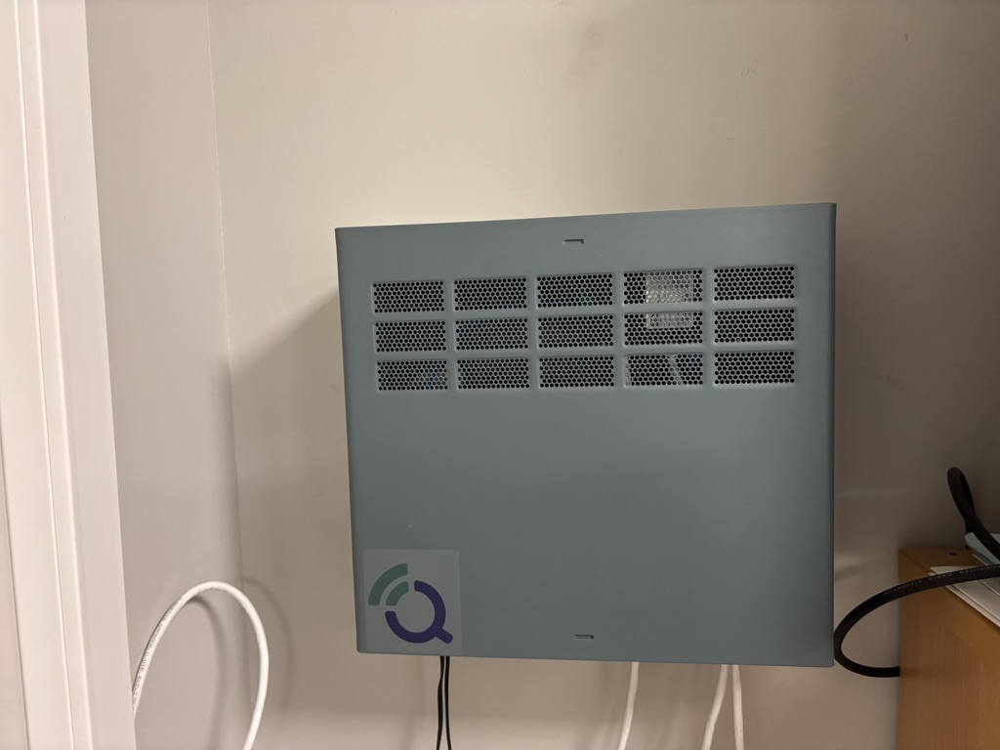

24/7
持续监测
通过数据的操作可用性持续捕获环境变量。
Qartia 通过 IoT 传感器、专用网络、分析、预测人工智能和数据智能查询将环境监测变成日常工作工具。
通过数据的操作可用性持续捕获环境变量。
预测未来值并允许提前发出警报的模型。
快速访问有关捕获历史记录的模式、统计数据和响应。
城市、工业或地区的技术和经济验证。
持续监测浓度、趋势和事件。
通过自身传感器和外部站预测污染物的未来值。
对捕获的历史记录进行自然语言查询，以快速提取有用的信息。
城市、工业和合规性的声学行为的捕获和追踪。
为城市、工业和复杂区域中部署的节点提供可靠的连接。
技术监控、操作和决策的清晰可视化。
环境传感器→专用网络(LoRa/DECT NR+)→边缘→仪表板/AI/RAG/警报
互联网连接可以通过 5G、WiFi 或以太网来解决，具体取决于位置。该平台可以与已安装的传感器共存，也可以作为完整的 Qartia 解决方案进行部署。

现场通信和电子节点，用于稳定捕获、聚合和发送环境数据。

基于综合环境数据和污染物预测模型的卡塔赫纳人工智能预测示例。
Cabezo Beaza、Atlantic Copper 和卡塔赫纳市政厅等项目展示了相同的方法：在现场部署，稳定捕获数据并将其传输到清晰的可视化以进行操作和监控。
地点选择、变量、覆盖范围和运营目标。
节点安装、连接检查和数据质量控制。
对捕获的历史记录进行预测、可视化、警报和高级查询。
影响报告、扩展建议和实施计划。
请求 Qartia 试点并验证工业、城市或地区环境中环境数据的捕获、连接、预测和利用。
以 HTML 格式编写的小册子，用于数字演示或打印为 PDF。